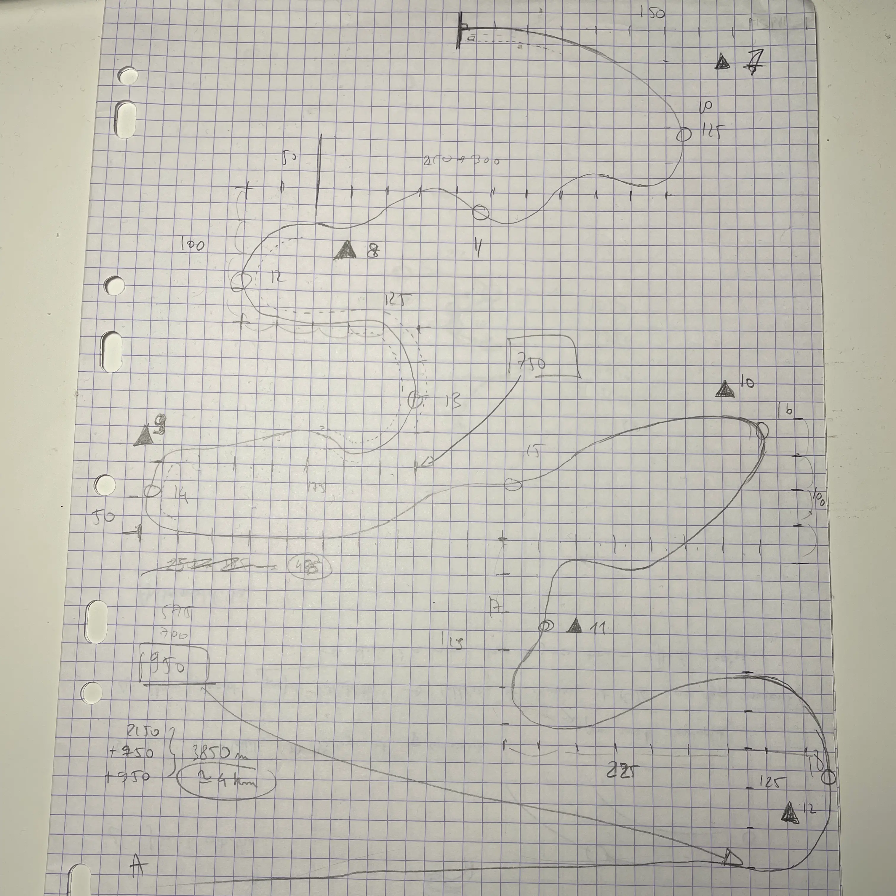

Better Late than Basic
Présentation et déroulement du projet.
Présentation
- Équipe de 9
- 4 jours
- Exercice du master JMIN
- Unity, Git, Notion
Better Late Than Basic (BLTB) est un jeu de course mêlant le goût de la vitesse à celui du style. Entre montagne et ville, dévalez son circuit escarpé et collectez un maximum d'éléments de tuning automobile afin d'arriver le premier, mais surtout le plus flowté.
Déroulement du projet
Pour BLTB, j'ai pris la charge du level design, le reste du game design étant décidé collectivement.
Avec mon collègue game designer, nous avons dessiné sur papier un layout du circuit, les metrics étant définies avec les graphistes :
L'esthétique PS1 déjà établie, j'ai pensé réaliser le circuit à l'aide de ProBuilder. ProBuilder sera finalement utilisé pour la dernière partie du circuit, en ville, tandis que le reste sera construit sur un spline. Unity 2021 ne proposant pas de splines par défaut, nous avons utilisé le plugin de Sebastian Lague. Ce plugin n'étant pas la panacée pour des raisons d'optimisation du temps et de workflow, un de nos graphistes finira d'assembler le circuit, quasiment fini à ce moment-là, sur Blender.
Au niveau du game design, je dois reconnaître que BLTB a quelques défauts de conception, comme l'absence de signalisation pour savoir si l'on roule dans le bon sens. Pour autant, je suis quand même satisfait de ce que l'on a produit en 4 jours.